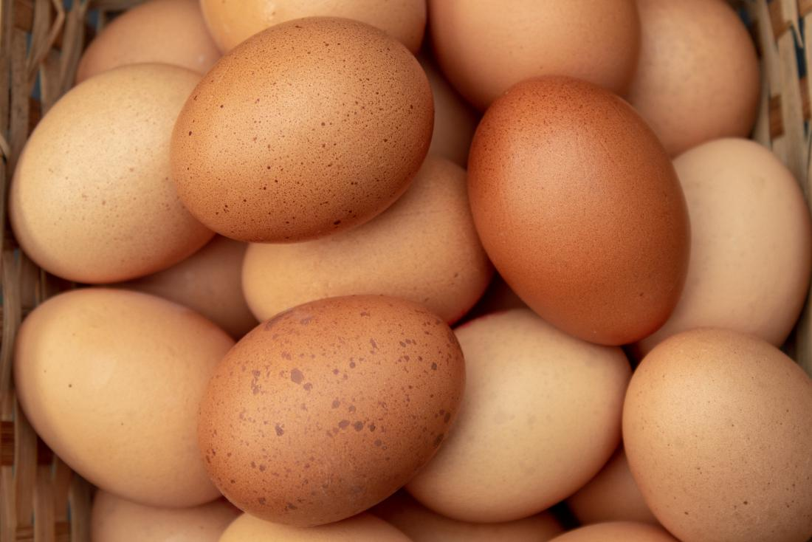

Karšta kakava
Recepto paruošimas
- Pirmiausia įkaitinkite orkaitę iki 175 laipsnių temperatūros ir pasisveriame ingredientus. Nuo šių sausainių gaminimo laiko labai priklausys jų tekstūra, rezultatas, tad reikėtų nesėdėti rankų sudėjus.
- Garų vonelėje išlydykite šokoladą su sviestu. Kol jie lydosi, į didelį dubenį muškite kiaušinį ir berkite abiejų rūšių cukrų. Plakite dideliu galingumu apie 5 minutes.
- Atskirame dubenėlyje sumaišykite sausus ingredientus. Šokolado masė jau turi būti paruošta, tad jeigu dar nepraėjo 5 plakimo minutės, tiesiog paliekame šokoladą šiek tiek pravėsti.
- Sumažiname plaktuvo galingumą ir po truputį pilame jau pravėsusią masę.
- Kai jau viskas patampa vientisa, pakeičiame kombaino antgalį, į skirtą tirštesnei tešlai (jeigu naudosite įprastą plaktuvą, šį žingsnį tiesiog praleidžiame) ir plakdami labai lėtai, po truputį beriame sausų ingredientų mišinį.
- Mūsų brownie sausainių tešla jau paruošta! Neišsigąstame, kad ji tikrai skystesnė nei įprastos sausainių masės, bet tai būtent ta priežastis, kuri suteiks sausainiams tą labai gražų suskeldėjusį raštą irlabai minkštą bei tąsų vidų.
- Tada į kepimo skardą, išklotą su kepimo popieriumi, dėkite po norimą kiekį tešlos. Aš dedu po vieną arbatinį šaukštelį su nemenku kaupu, bet jūs galite kepti tiek didesnius, tiek mažesnius sausainius - pagal savo norus ir pageidavimus.
- Dėkite į jau įkaitintą orkaitę ir kepkite apie 10-12 minučių.
Alergenai


Įrankiai

Ingredientai
- 70% juodas šokoladas : 100 gramų
- sviestas : 62 gramų
- cukrus : 75 gramų
- rudas cukrus : 50 gramų
- kiaušiniai : 1
- miltai : 65 gramų
- kakavos milteliai : 11 gramų
- kepimo milteliai : 0,5 arbatinio šaukštelio
- druska : žiupsnelio